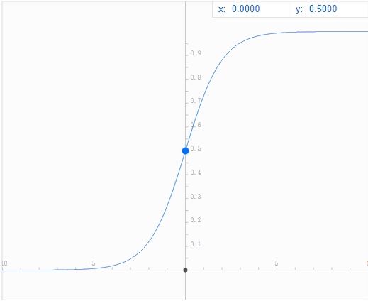
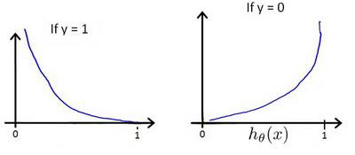
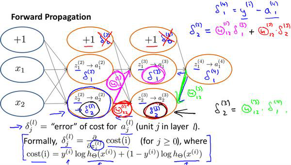
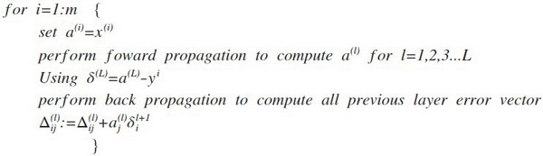

Andrew Ng的机器学习入门课程已经全部看完了，笔记也写了一些，这里总结所有所学的内容，说实话，现在完全忘记了开始所学的内容了。
什么是机器学习
Arthur Samuel。他定义机器学习为，在进行特定编程的情况下给予计算学习能力的领域。
Tom Mitchell。他定义的的机器学习是，一个程序被认为能从经验E中学习，解决任务T，达到性能度量值P，当且仅当，有了经验E后，经过P评判，程序再处理T时的性能有所提升。
周志华。他再机器学习一书中的意思是，让机器从数据中学习，进而得到一个更加符合现实规律的模型，通过对模型的使用使得机器比以往表现的更好，这就是机器学习。
我的愚见。机器学习就是在已有的数据中发现规律再寻找符合这个规律的数据。
监督学习
回归（房价预测），分类（肿瘤预测），给出特征值与其对应的结果。
无监督学习
聚类（新闻、邮件的分类），只根据特征值寻找其中的规律。
线性回归
模型表示
m：训练集中实例的数量
x：特征值/输入变量
y：目标值/输出变量
（x，y）：训练集中的实例
第i个实例：$(x^i, y^i)$
h：学习算法中的解决方案或函数，也称为假设（hypothesis）
线性回归代价函数
预测函数$h_\theta(x)$是关于$x$的函数,而代价函数是一个关于$(\theta_0,\theta_1)$的函数
$J(\theta_0,\theta_1) = \frac{1}{2m} \sum^m_{i=1}(h_\theta(x^i)-y^i)^2$ 优化目标：$minimize J(\theta_0,\theta_1)$梯度下降
梯度下降是一个用来求函数最小值的算法，我们将使用梯度下降算法来求出代价函数$J(\theta_0,\theta_1)$的最小值。 梯度下降背后的思想是：开始时我们随机选择一个参数组合$(\theta_0, \theta_1, ......,\theta_n)$，计算代价函数，然后我们寻找下一个能让代价函数值下降最多的参数组合。我们持续这么做直到到一个局部最小值，因为我们没有尝试完所有的参数组合，所以不能确定我们得到的局部最小值是否是全局最小值，选择不同的初始参数组合，可能回找到不同的局部最小值。线性回归问题运用梯度下降法，关键在于求出代价函数的导数，即：
$\frac{\partial }{\partial {{\theta }{j}}}J({{\theta }{0}},{{\theta }{1}})=\frac{\partial }{\partial {{\theta }{j}}}\frac{1}{2m}{{\sum\limits_{i=1}^{m}{\left( {{h}_{\theta }}({{x}^{(i)}})-{{y}^{(i)}} \right)}}^{2}}$
$j=0$ 时：$\frac{\partial }{\partial {{\theta }{0}}}J({{\theta }{0}},{{\theta }{1}})=\frac{1}{m}{{\sum\limits{i=1}^{m}{\left( {{h}_{\theta }}({{x}^{(i)}})-{{y}^{(i)}} \right)}}}$
$j=1$ 时：$\frac{\partial }{\partial {{\theta }{1}}}J({{\theta }{0}},{{\theta }{1}})=\frac{1}{m}\sum\limits{i=1}^{m}{\left( \left( {{h}_{\theta }}({{x}^{(i)}})-{{y}^{(i)}} \right)\cdot {{x}^{(i)}} \right)}$
则算法写成：
Repeat {
${\theta_{0}}:={\theta_{0}}-a\frac{1}{m}\sum\limits_{i=1}^{m}{ \left({{h}_{\theta }}({{x}^{(i)}})-{{y}^{(i)}} \right)}$
${\theta_{1}}:={\theta_{1}}-a\frac{1}{m}\sum\limits_{i=1}^{m}{\left( \left({{h}_{\theta }}({{x}^{(i)}})-{{y}^{(i)}} \right)\cdot {{x}^{(i)}} \right)}$
}
特征缩放
尝试将所有特征的尺度都尽量缩放到-1到1之间， 最简单的方法是令：${{x}{n}}=\frac{{{x}{n}}-{{\mu}{n}}}{{{s}{n}}}$，其中 ${\mu_{n}}$是平均值，${s_{n}}$是标准差。学习速率
梯度下降算法的每次迭代受到学习率的影响，如果学习率$a$过小，则达到收敛所需的迭代次数会非常高；如果学习率$a$过大，每次迭代可能不会减小代价函数，可能会越过局部最小值导致无法收敛。
通常可以考虑尝试些学习率：
$\alpha=0.01，0.03，0.1，0.3，1，3，10$
正规方程
正规方程是通过求解下面的方程来找出使得代价函数最小的参数的：$\frac{\partial}{\partial{\theta_{j}}}J\left( {\theta_{j}} \right)=0$ 。 假设我们的训练集特征矩阵为 $X$（包含了 ${{x}_{0}}=1$）并且我们的训练集结果为向量 $y$，则利用正规方程解出向量 $\theta ={{\left( {X^T}X \right)}^{-1}}{X^{T}}y$ 。
梯度下降与正规方程的比较
| 梯度下降 | 正规方程 |
|---|---|
| 需要选择学习速率 | 不需要 |
| 需要多次迭代 | 需要计算${{\left( {X^T}X \right)}^{-1}}{X^{T}}$如果特征数量n较大则运算代价大，因为矩阵逆的计算时间复杂读为$O(n^3)$，通常来说n小于一万时还可以接受 |
| 适用于各种类型的模型 | 只适用于线性模型，不适合逻辑回归等其他模型 |
总结一下，只要特征变量的数目并不大，标准方程是一个很好的计算参数$\theta $的替代方法。具体地说，只要特征变量数量小于一万，通常使用标准方程法，而不使用梯度下降法。
逻辑回归
逻辑回归(Logistic Regression)一般用在分类问题中。
假设函数
$h_\theta(x) = g(\theta^TX)$ $g\left( z \right)=\frac{1}{1+{{e}^{-z}}}$X代表特征向量，g代表逻辑函数(Logistic function)，常用的逻辑函数为S形函数(Sigmoid function)

判定边界
在逻辑回归中，我们预测：
当${h_\theta}\left( x \right)>=0.5$时，预测 $y=1$。
当${h_\theta}\left( x \right)<0.5$时，预测 $y=0$。
根据 S 形函数图像，我们知道当
$z=0$ 时 $g(z)=0.5$
$z>0$ 时 $g(z)>0.5$
$z<0$ 时 $g(z)<0.5$
又 $z={\theta^{T}}x$，即：
${\theta^{T}}x>=0$ 时，预测 $y=1$.
${\theta^{T}}x<0$ 时，预测 $y=0$
接下来看价函数
逻辑回归代价函数
逻辑回归的代价函数为：
$J\left( \theta \right)=\frac{1}{m}\sum\limits_{i=1}^{m}{{Cost}\left( {h_\theta}\left( {x}^{\left( i \right)} \right),{y}^{\left( i \right)} \right)}$.

这样构建的$Cost\left( {h_\theta}\left( x \right),y \right)$函数的特点是：当实际的 $y=1$ 且${h_\theta}\left( x \right)$也为 1 时误差为 0，当 $y=1$ 但${h_\theta}\left( x \right)$不为1时误差随着${h_\theta}\left( x \right)$变小而变大；当实际的 $y=0$ 且${h_\theta}\left( x \right)$也为 0 时代价为 0，当$y=0$ 但${h_\theta}\left( x \right)$不为 0时误差随着 ${h_\theta}\left( x \right)$的变大而变大。 将构建的 $Cost\left( {h_\theta}\left( x \right),y \right)$简化如下： $Cost\left( {h_\theta}\left( x \right),y \right)=-y\times log\left( {h_\theta}\left( x \right) \right)-(1-y)\times log\left( 1-{h_\theta}\left( x \right) \right)$ 带入代价函数得到：
$J\left( \theta \right)=\frac{1}{m}\sum\limits_{i=1}^{m}{[-{{y}^{(i)}}\log \left( {h_\theta}\left( {{x}^{(i)}} \right) \right)-\left( 1-{{y}^{(i)}} \right)\log \left( 1-{h_\theta}\left( {{x}^{(i)}} \right) \right)]}$.
即：
$J\left( \theta \right)=-\frac{1}{m}\sum\limits_{i=1}^{m}{[{{y}^{(i)}}\log \left( {h_\theta}\left( {{x}^{(i)}} \right) \right)+\left( 1-{{y}^{(i)}} \right)\log \left( 1-{h_\theta}\left( {{x}^{(i)}} \right) \right)]}$.
在得到这样一个代价函数以后，我们便可以用梯度下降算法来求得能使代价函数最小的参数了。算法为：
Repeat { $\theta_j := \theta_j - \alpha \frac{\partial}{\partial\theta_j} J(\theta)$ (simultaneously update all ) }
求导后得到：
Repeat { $\theta_j := \theta_j - \alpha \frac{1}{m}\sum\limits_{i=1}^{m}{{\left( {h_\theta}\left( \mathop{x}^{\left( i \right)} \right)-\mathop{y}^{\left( i \right)} \right)}}\mathop{x}_{j}^{(i)}$ (simultaneously update all ) }高级优化
共轭梯度法 BFGS (变尺度法)
L-BFGS (限制变尺度法)
线性搜索(line search)
正则化
正则化可以改善或者减少过拟合问题。
$...+\frac{\lambda}{2m}\sum\limits_{j=1}^{n}\theta_j^2$神经网络
当特征他多时，需要神经网络。
标记方法
训练样本数：$m$
输入信号：$x$
输出信号：$y$
神经网络层数：$L$
每层的neuron个数：$S_1$ - $S_L$
神经网络的分类
二类分类：$S_L = 0, y = 0 or 1$
K类分类：$S_L = k, y_i = 1 (k > 2)$

代价函数
$\newcommand{\subk}[1]{ #1_k }$ $$h_\theta\left(x\right)\in \mathbb{R}^{K}$$ $${\left({h_\theta}\left(x\right)\right)}_{i}={i}^{th} \text{output}$$ $J(\Theta) = -\frac{1}{m} \left[ \sum\limits_{i=1}^{m} \sum\limits_{k=1}^{k} {y_k}^{(i)} \log \subk{(h_\Theta(x^{(i)}))} + \left( 1 - y_k^{(i)} \right) \log \left( 1- \subk{\left( h_\Theta \left( x^{(i)} \right) \right)} \right) \right] + \frac{\lambda}{2m} \sum\limits_{l=1}^{L-1} \sum\limits_{i=1}^{s_l} \sum\limits_{j=1}^{s_l+1} \left( \Theta_{ji}^{(l)} \right)^2$反向传播
向前传播的算法是:

反向传播的算法就是先正向传播计算出每一层的激活单元，然后利用训练集的结果与神经网络预测的结果求出最后一层的误差，然后利用该误差运用反向传播计算出直至第二层的所有误差。
在求出了$\Delta_{ij}^{(l)}$之后，我们便可以计算代价函数的偏导数了，计算方法如下： $ D_{ij}^{(l)} :=\frac{1}{m}\Delta_{ij}^{(l)}+\lambda\Theta_{ij}^{(l)}$ ${if}; j \neq 0$ $ D_{ij}^{(l)} :=\frac{1}{m}\Delta_{ij}^{(l)}$ ${if}; j = 0$神经网络的总结
网络结构：第一件要做的事是选择网络结构，即决定选择多少层以及决定每层分别有多少个单元。
第一层的单元数即我们训练集的特征数量。
最后一层的单元数是我们训练集的结果的类的数量。
如果隐藏层数大于1，确保每个隐藏层的单元个数相同，通常情况下隐藏层单元的个数越多越好。
我们真正要决定的是隐藏层的层数和每个中间层的单元数。
训练神经网络：
参数的随机初始化
利用正向传播方法计算所有的$h_{\theta}(x)$
编写计算代价函数 $J$ 的代码
利用反向传播方法计算所有偏导数
利用数值检验方法检验这些偏导数
使用优化算法来最小化代价函数